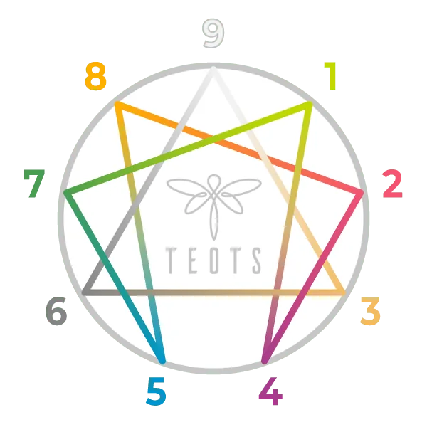
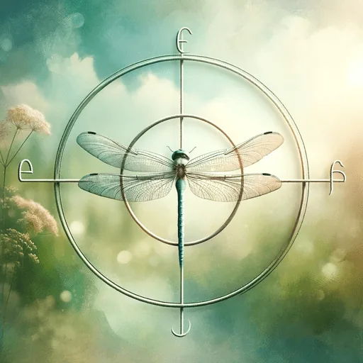

ENEAGRAMA
¿Qué es Eneagrama?

INTRODUCCIÓN
¿Qué significa la palabra Eneagrama?
Eneagrama en griego significa literalmente nueve líneas. En geometría, un eneagrama es una estrella de nueve puntas.
Cada punta es un tipo de personalidad, un eneatipo, un perfil tipo de los nueve del eneagrama.
El Eneagrama busca ayudarte a reconocer tu máscara para poder ser más la persona que la lleva, a mirarte al espejo para buscar tu auténtica cara del ser detrás de la máscara de la personalidad. Eres lo que hay detrás de ella.
Aquí puedes hacer dos test creados por Riso-Hudson
*Para un trabajo profundo se recomienda el Programa SAT,
fundado por Claudio Naranjo.*
TEOTS UTILIZA INTELIGENCIA ARTIFICIAL PARA EL CONOCIMIENTO

EnneagramAI by TEOTS
¿Para qué sirve?
Con la ayuda de la tecnología proporcionada por Open AI, EnneagramAI by TEOTS, basado en ChatGPT, tiene una amplia base de datos propia en la que buscar información.
Es una tecnología creada por TEOTS, que usa su propia base de datos y entrenamiento.
Puedes hacer cualquier pregunta sobre eneagrama, y te ayudará.
Versión 1.1 (24.12.2023)
DESCRIPCIÓN DE LOS ENEATIPOS
TIPO 1
TIPO 2
TIPO 3
TIPO 4
TIPO 5
TIPO 6
TIPO 7
TIPO 8
TIPO 9
TIPO 1
Resumen hecho por chat gpt:
Tipo 1 «La Ira» del Eneagrama de Claudio Naranjo
Pecado: La Ira
Fijación: Resentimiento
Virtud: Serenidad
El eneatipo 1 en términos de su núcleo motivacional, no se caracteriza por ser violento; más bien, es alguien que se opone firmemente a la violencia, tanto en su propio comportamiento como en el de los demás. Este tipo de personalidad se manifiesta principalmente a través de actitudes críticas, un fuerte interés en el poder, la búsqueda constante de la perfección y un deseo de dominar las situaciones.
A pesar de que en su psicología pueda existir un potencial agresivo, esto se encuentra eclipsado por un mandato ético fundamental de no agresión. Son individuos perfeccionistas que se dedican con entusiasmo a seguir reglas, normas y a actuar con buenas intenciones y nobles propósitos. Suelen creer que no valen nada ni merecen amor a menos que alcancen la perfección. Esta fuerte devoción a la bondad puede llevarlos a ser críticos en exceso y carecer de ternura en sus interacciones.
El eneatipo 1 tiende a resistirse a reconocer la tensión interna causada por la ira y a expresar abiertamente su rabia. Para alcanzar su mejor versión, necesitan aprender a relativizar y cultivar la serenidad. A través de su búsqueda de la verdad, la perfección y la justicia, estos individuos nos brindan valiosas lecciones.
TIPO 2
Resumen hecho por chat gpt:
Tipo 2 «El Orgullo» del Eneagrama de Claudio Naranjo
Pecado: El orgullo
Fijación: Halago
Virtud: Humildad
El eneatipo 2 es una persona que anhela ser el centro de atención y busca profundamente el amor y el cuidado de los demás. Tiende a dar para recibir y a menudo carece de autocrítica, lo que puede llevarlo a sentirse superior, grandioso, digno e importante. Sin embargo, en su interior, subyace una profunda necesidad de amor, y su vida gira en torno a esta urgencia de ser amado, a menudo a través de una realidad que no es del todo genuina.
Cuando se siente pleno de amor y atención, el eneatipo 2 puede experimentar un orgullo que lo hace sentirse una persona “grande”, capaz de dar mucho a los demás y merecedora de lo mejor que pueden ofrecer. A pesar de ser cariñoso por naturaleza, cuando emprende el viaje de autoconocimiento, puede descubrir que esta naturaleza cariñosa es en realidad un papel que se ha confundido con su verdadera identidad.
El eneatipo 2 tiende a resistirse a reconocer sus propias necesidades y sentimientos internos. Para crecer y desarrollarse, necesita aprender a conectarse con la humildad. En su relación con los demás, este tipo de personalidad nos enseña lecciones valiosas sobre la generosidad, la empatía y la capacidad de brindar ayuda.
VER RECURSOS ENEATIPO 2
TIPO 3
Resumen hecho por chat gpt:
Tipo 3 «La Vanidad» del Eneagrama de Claudio Naranjo
Pecado: Vanidad
Fijación: Desasosiego – Superficialidad
Virtud: Autenticidad
La persona del eneatipo 3, presenta similitudes con el carácter farsante debido a su habilidad para adoptar conscientemente diversos roles según sus intereses. Esta personalidad se caracteriza por ser alegre y eficiente, sin mostrar rasgos patológicos evidentes y encaja bien con el estilo de vida estadounidense.
“Uno debe estar a la moda en el mercado de personalidades y para lograrlo, es necesario saber cuál personalidad está en alza”.
Este tipo de persona es optimista, altamente eficiente y enérgico, aunque tiende a ser superficial, narcisista y extremadamente competitivo. Experimenta un fuerte deseo de ser aceptado y admirado, a menudo confundiendo la admiración con el amor. La conexión con sus propios sentimientos suele ser limitada, ya que considera que estos pueden obstaculizar su rendimiento.
La resistencia a reconocer su propio vacío emocional es una característica común en este eneatipo. Para su crecimiento, necesita conectar con su verdad auténtica. En sus relaciones con los demás, esta personalidad aporta efectividad, perseverancia, constancia y una gran energía.
VER RECURSOS ENEATIPO 3
TIPO 4
Resumen hecho por chat gpt:
Tipo 4 «La Envidia» del Eneagrama de Claudio Naranjo
Pecado: La envidia
Fijación: Melancolía
Virtud: Ecuanimidad-Desapasionamiento
Las personas del eneatipo 4 suelen percibir que les faltan emociones y, en consecuencia, creen que los demás siempre tienen mejores cualidades. Esta percepción está estrechamente relacionada con la envidia. Son individuos caracterizados por su impulsividad y tendencia auto-destructiva de forma dramática. Sin embargo, detrás de todo esto se oculta un miedo irracional al abandono y una necesidad exagerada de protección. No se permiten experimentar la alegría ni el éxito.
Este eneatipo presenta una personalidad auto-boicoteadora que se manifiesta como un masoquismo emocional, donde el sufrimiento se convierte en una forma de buscar atención y amor, y necesitan compartir su estado de ánimo. Suelen reproducir la experiencia traumática del abandono por parte de los demás, lo que provoca un sentido de individualismo que los hace sentirse especiales.
– Resisten conformarse a los estándares de los demás y les cuesta reconocer sus propias cualidades.
– Necesitan calma y serenidad en sus sentimientos.
– Enriquecen nuestras vidas con su profunda emocionalidad, sensibilidad y singularidad.
VER RECURSOS ENEATIPO 4
TIPO 5
Resumen hecho por chat gpt:
Tipo 5 «La Avaricia» del Eneagrama de Claudio Naranjo
Pecado: La avaricia
Fijación: Mezquindad
Virtud: Desapego
En el eneatipo 5 se caracterizan por su indiferencia hacia las relaciones humanas, su dificultad para comunicarse, su falta de expresividad, la restricción de sus propios deseos y su torpeza social. Sienten que el mundo no les brinda el amor que anhelan y, por lo tanto, eligen valerse por sí mismos. Se distancian del mundo, que parece demandarles más de lo que ofrecen y les supone más obstáculos que ayuda. Tienen una inclinación hacia lo intelectual.
No son cálidos ni apasionados, sino más bien tibios y sensibles. La pasión que los impulsa es la búsqueda del aislamiento y la soledad, el deseo de no ser interferidos, demandados ni invadidos. Experimentan un temor profundo a quedarse vacíos, lo que da lugar a la avaricia, el pensamiento de que “en mi soledad, nadie podrá arrebatarme lo que siento”. En su búsqueda de un mundo más interesante, a menudo se refugian en su cueva interna, donde se sienten tranquilos y seguros, alejados de todo y todos.
Estos individuos tienden a resistirse a dar y expresar sus sentimientos y necesidades. Para crecer, deben esforzarse por ser más generosos y compartir con los demás. Aportan un ejemplo de concentración, sabiduría e intelectualidad a quienes los rodean.
VER RECURSOS ENEATIPO 5
TIPO 6
Resumen hecho por chat gpt:
Tipo 6 «El Miedo» del Eneagrama de Claudio Naranjo
Pecado: El miedo
Fijación: Duda
Virtud: Valentía – coraje
El eneatipo 6 se caracteriza por su profundo miedo y duda, lo que resulta en una personalidad tímida, indecisa, dependiente y evitativa. Su deseo de mantener vínculos puede llevarlo a tolerar abusos, ya que siente una gran pasión tanto por obedecer como por dar órdenes. Esto lo lleva a ejercer un autocontrol significativo que, en ocasiones, puede dar lugar a explosiones de emociones. Siempre está alerta y muestra una prudencia notable, analizando exhaustivamente las situaciones y dudando en cada paso. Tiene un fuerte sentido del deber y se aferra a las normas y a lo predecible en busca de seguridad, al tiempo que defiende a los más débiles por encima de todo.
Las personas de este eneatipo tienden a percibir peligro incluso cuando no existe y suelen sentir inseguridad en sus propias capacidades. La lealtad es su principal objetivo, lo que los hace cálidos y afectuosos con los demás. Tienen un temor exagerado a cometer errores y tienden a ser muy disciplinados, mostrando un gran control emocional y siendo autocríticos, así como críticos hacia los demás.
La resistencia a encontrar en sí mismos el apoyo y la confianza que necesitan es una característica común. Para crecer, necesitan conectar con su valor interno, confiar en sí mismos y aprender a tomar decisiones con resolución. En sus relaciones, aportan lealtad, compromiso, prudencia y un sentido de fraternidad.
VER RECURSOS ENEATIPO 6
TIPO 7
Resumen hecho por chat gpt:
Tipo 7 «La Gula» del Eneagrama de Claudio Naranjo
Pecado: La gula
Fijación: Planificación
Virtud: Sobriedad – templanza
El eneatipo 7 se caracteriza por ser una personalidad seductora y afectuosa, amable y alegre, que evita cargar a los demás con sus preocupaciones y tampoco desea llevar el peso de las preocupaciones ajenas. Este tipo de persona busca el amor placentero y puede tender a confundir el amor con el placer. La personalidad del “goloso” es naturalmente curiosa y exploradora, siempre encuentra más atractivo lo distante que lo cercano.
Esta personalidad se muestra lúdica, resaltando su naturaleza juguetona, y se acerca a los demás de manera similar a como lo haría un niño que busca compañía para jugar. Aunque puede parecer un galante distinguido, en su interior puede haber un cierto aprovechamiento y una mayor preocupación por sí mismo que por los demás, aunque esto se compense a través de su generosidad galante. La personalidad tiende a ser “narcisista”, con una fuerte necesidad de afecto, apoyo, admiración y la expectativa de un trato especial debido a sus talentos o méritos.
Este eneatipo a menudo se resiste a reconocer su propio dolor y desasosiego. Para crecer, necesita aprender a vivir en el presente y asumir la responsabilidad de sus acciones y decisiones. En las relaciones, aporta alegría, optimismo y una actitud galante hacia la vida.
VER RECURSOS ENEATIPO 7
TIPO 8
Resumen hecho por chat gpt:
Tipo 8 «La Lujuria» del Eneagrama de Claudio Naranjo
Pecado: La lujuria
Fijación: Venganza
Virtud: Inocencia
Las personas del eneatipo 8 se caracterizan por ser decididas y poderosas, con una fuerte personalidad. Suelen ser líderes naturales, seguros de sí mismos y no temen tomar el control de las situaciones. Tienen un fuerte deseo de proteger a los débiles y de enfrentar cualquier desafío que se les presente. A menudo, se les percibe como personas seguras de sí mismas, que no tienen miedo de expresar su opinión.
Los eneatipo 8 pueden ser desafiantes y confrontativos, y a veces pueden parecer intimidantes para los demás. Tienen una pasión por el poder y pueden luchar por mantener el control en diversas situaciones. Sin embargo, también tienen un lado tierno y protector, y pueden ser muy leales y cuidadosos con las personas que aman.
A menudo, se resisten a mostrar vulnerabilidad y a admitir sus propias debilidades. Para crecer, necesitan aprender a confiar en los demás y a permitirse ser más vulnerables. En sus relaciones, aportan fuerza, protección y un profundo sentido de lealtad y cuidado.
VER RECURSOS ENEATIPO 8
TIPO 9
Resumen hecho por chat gpt:
Tipo 9 «La Pereza» del Eneagrama de Claudio Naranjo
Pecado: La pereza
Fijación: Indolencia
Virtud: Diligencia – Acción
Las personas del eneatipo 9 se caracterizan por ser personas pacíficas y conciliadoras. Suelen evitar el conflicto a toda costa y prefieren mantener la armonía en sus relaciones. Tienden a ser amables, complacientes y agradables con los demás. El deseo de evitar la confrontación a menudo los lleva a ignorar sus propias necesidades y deseos, y pueden llegar a desconectarse de sus propios sentimientos y opiniones.
El eneatipo 9 es conocido por su habilidad para adaptarse a diferentes situaciones y personas. Pueden parecer apacibles y fáciles de llevar, pero a veces pueden tener dificultades para expresar sus propias opiniones y tomar decisiones firmes. Suelen postergar sus propias metas y necesidades en favor de mantener la paz y la armonía en sus relaciones.
La pasión principal de este eneatipo es la pereza, que se manifiesta como una tendencia a la inercia y la resistencia al cambio. A menudo se resisten a reconocer sus propias insatisfacciones y conflictos internos. Para crecer, necesitan aprender a conectarse con sus deseos y opiniones, y a expresar sus necesidades de manera más asertiva. En sus relaciones, aportan una influencia calmante, la capacidad de escuchar y una fuerte inclinación hacia la reconciliación.
VER RECURSOS ENEATIPO 9
INTRODUCCIÓN AL ENEAGRAMA
CURSO DE ENEAGRAMA